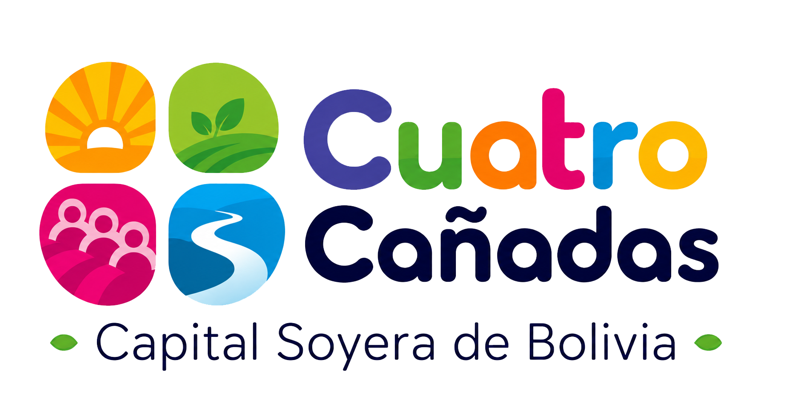

Sin conexión
Municipio Digital necesita acceso a internet para consultar información y mantener tus datos actualizados.

Municipio Digital necesita acceso a internet para consultar información y mantener tus datos actualizados.